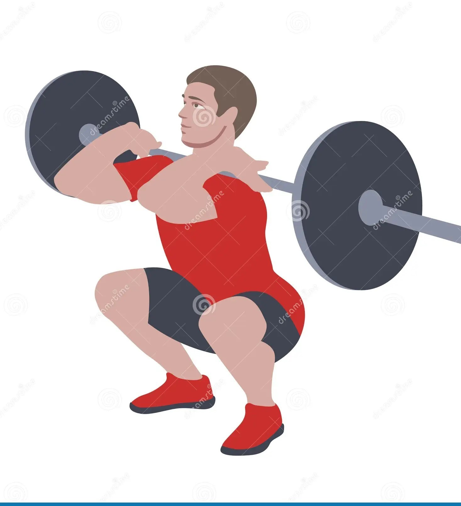

Exercise Description
Position a barbell across the front of your shoulders, clasping your hands to keep it in place. Stand with feet shoulder-width apart. Lower your body by bending your knees and hips until your thighs are parallel to the ground, then push back up.
Reps and Sets
Beginners: 3 sets of 12-15 reps
Weights: 10-15 kg plates per side
Rest time between each set: 45secs
Video Implementation